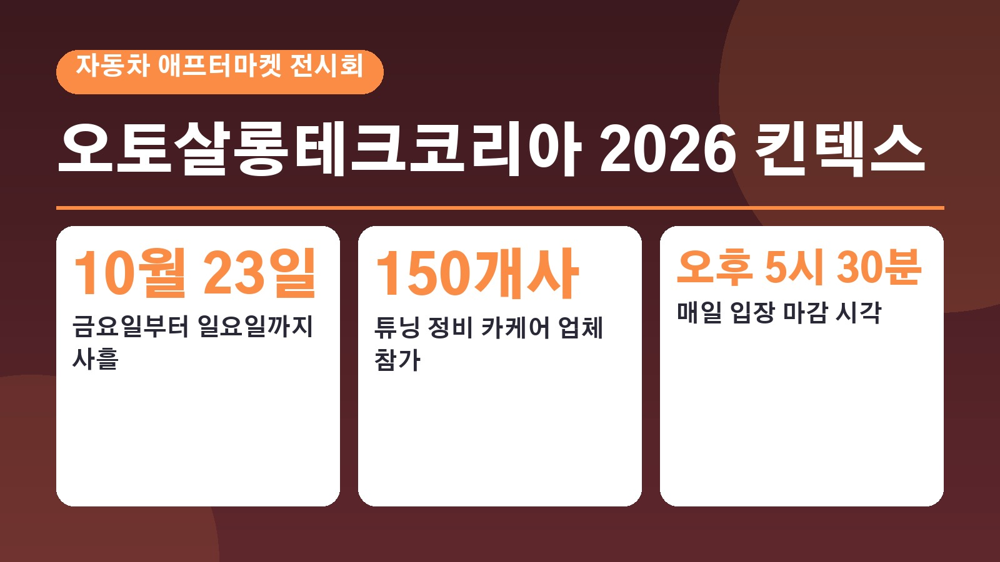
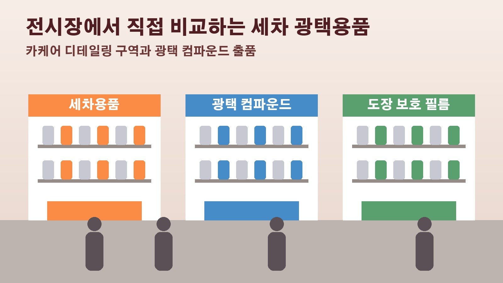

오토살롱테크코리아 2026 킨텍스 사흘간 개막, 세차 광택용품과 카케어 디테일링 보러 간다면 챙길 것

세차용품이나 광택 컴파운드를 직접 만져 보고 고르고 싶은데 온라인 상세페이지만으로는 감이 안 올 때가 있죠. 세차장을 운영하거나 디테일링에 관심 있는 분이라면 한자리에서 여러 업체를 비교해 볼 기회가 반가울 텐데요. 자동차 애프터마켓 전시회 오토살롱테크코리아 2026이 10월 23일 금요일부터 25일 일요일까지 일산 킨텍스에서 열립니다. 세차와 카케어 쪽에서 무엇을 볼 수 있는지, 가기 전에 알아 둘 운영 정보는 무엇인지 정리했습니다.
오토살롱테크코리아 2026, 어떤 전시회인가
오토살롱테크코리아는 튜닝과 정비, 부품, 친환경차 기술을 함께 다루는 자동차 애프터마켓 전문 전시회입니다. 예전에는 오토살롱위크라는 이름으로 열리다가 지난해부터 기술과 미래차 분야를 강화하면서 지금 이름으로 바뀌었습니다. 서울메쎄와 월간 카테크가 주최하고 국토교통부와 산업통상자원부가 후원합니다. 올해는 약 150개사가 참가하고, 주최 측은 관람객 6만명을 목표로 잡았습니다. 세차와 광택 쪽만 보러 가더라도 정비와 튜닝 업체가 함께 있는 큰 행사라는 점을 알고 동선을 짜는 편이 좋습니다.
세차 광택용품과 카케어 디테일링은 어디에 해당하나
카테크 보도에 따르면 이번 전시에는 전통적인 애프터마켓 품목인 세차와 광택용품이 함께 나옵니다. 오토트리뷴은 전시 분야로 튜닝, 부품, 정비와 장비, 카케어와 디테일링, 모터스포츠, 전장, 미래 모빌리티, 일본 차 문화를 소개하는 구역을 꼽았고요. 차 외관 관리에 관심 있는 분이 눈여겨볼 만한 참가사로는 쓰리엠이 있습니다. 자동차 도장 보호 필름과 랩핑 필름, 윈도우 틴팅 필름, 전문가용 연마재와 광택 컴파운드를 출품할 예정이라고 합니다. 광택 작업이나 도장 보호 시공을 함께 하는 세차장이라면 들러 볼 만한 곳입니다.

정비 공구와 전기차 세미나도 함께
세차 외에도 볼거리가 넓습니다. 정비와 산업용 공구 기업 디티가 하이퍼 스폰서십으로 참여해 전문 공구와 정비 장비를 선보이고, 셰플러코리아는 애프터마켓 부품을, 런치테크는 스마트 진단과 정비 장비를 전시합니다. 올해 처음으로 이탈리아 국가관이 꾸려져 정비 공구와 교육, 조향과 서스펜션 분야 이탈리아 기업들이 한국에 처음 선보입니다. 행사 기간에는 전기차 정비와 수리, 인공지능을 활용한 정비 기술을 주제로 한 세미나도 열립니다. 정비를 함께 하는 세차장이라면 시간을 맞춰 들어 볼 만한 주제입니다.
관람 시간과 입장 방법
공식 관람 안내에 따르면 행사는 사흘 모두 오전 10시부터 오후 6시까지이고, 입장 마감은 오후 5시 30분입니다. 장소는 일산 킨텍스 제2전시장이며 오토트리뷴은 9홀에서 열린다고 전했습니다. 현장에서는 매표소에서 입장권을 받아 들어가고, 미리 표를 산 사람은 사전구매자 부스에서 본인 확인을 한 뒤 입장권을 받습니다. 사전구매를 하면 입장료를 할인받을 수 있다고 안내돼 있으니, 가격과 구매 마감은 공식 누리집에서 확인하고 움직이시면 됩니다.
참고한 기사: 카테크 2026 오토살롱테크코리아 10월 23일 개최 2026년 9월 3일, 오토트리뷴 오토살롱테크코리아 2026 디티 글로벌 애프터마켓 기업 참가 확정 및 10월 23일 킨텍스서 개막 2026년 10월 11일, 오토살롱테크코리아 공식 누리집 전시회 개요와 관람 안내
태그
오토살롱테크코리아 오토살롱2026 킨텍스전시회 세차용품 광택용품 카케어 디테일링 광택컴파운드 자동차애프터마켓 세차장운영